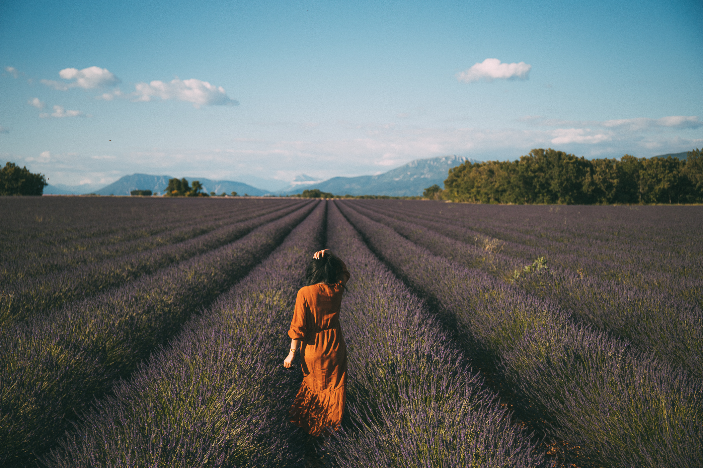
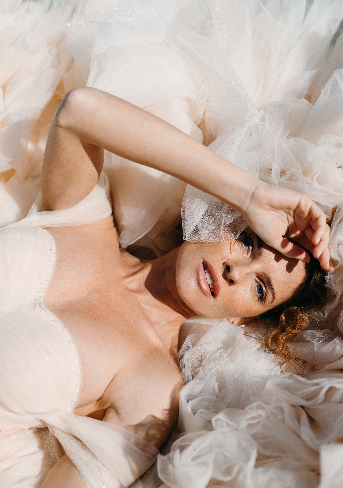

Salut ! Je suis Syrga
Je suis née à Bichkek, capitale du Kirghizistan. Mais le destin m'a amenée en France, où je vis depuis plus de 19 ans. Je parle kirghize, russe, français et anglais.
Je viens d'une famille d'artistes : une grand-mère peintre reconnue, une tante artisane, un père photographe et une mère chanteuse de musique folklorique. La photographie est pour moi le prolongement naturel de cet héritage créatif.
Mes racines nomades nourrissent ma passion du voyage et de la découverte. Je puise mon inspiration dans la beauté colorée du monde, au fil de nombreux périples — paysages variés, cultures multiples, communautés métissées.

Je veux révéler à travers mes photos la beauté cachée en chacun.

Une approche naturelle & authentique
Des images lumineuses et élégantes, des compositions soignées et une attention particulière aux détails : je crois en une photographie de mariage vraie, qui vous ressemble.
Mon approche mêle photojournalisme esthétique et images artistiques, émotionnelles et sincères. Je travaille avec discrétion pour raconter l'histoire d'une famille, révéler les émotions, saisir la joie, déceler la complicité, célébrer les amitiés et l'amour.
Travaillons ensemble